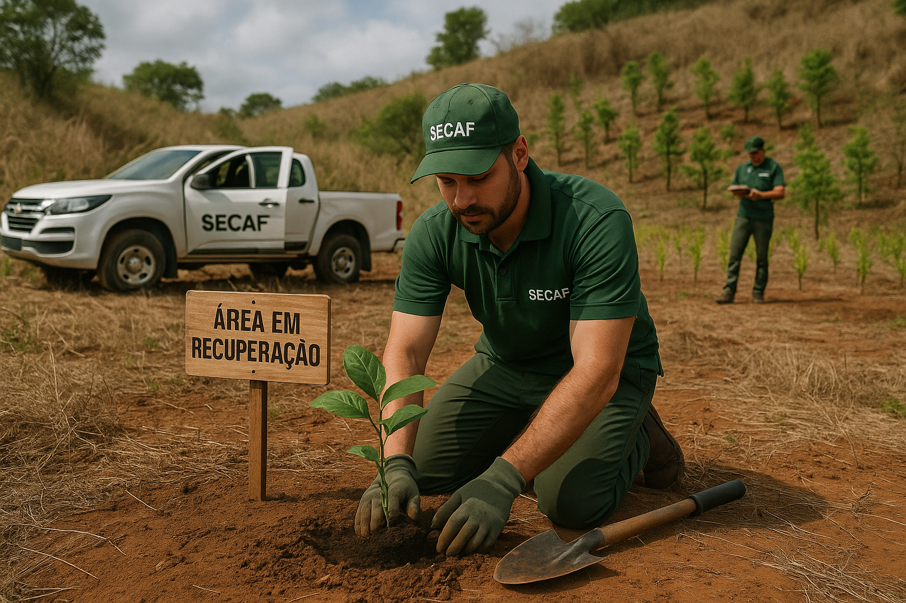

Recuperação de Áreas Degradadas
A SECAF atua de forma técnica e estratégica na recuperação de áreas degradadas e alteradas (RAD), promovendo o restabelecimento da funcionalidade ambiental, produtiva e paisagística dos ecossistemas afetados.
O que são Áreas Degradadas?
São espaços que perderam sua capacidade produtiva, ecológica ou paisagística devido a práticas inadequadas como desmatamento, uso excessivo de agroquímicos, erosão, queimadas, mineração, pastoreio excessivo ou descarte incorreto de resíduos.
Objetivos da Recuperação
- Restabelecer o equilíbrio ecológico do solo, água e vegetação;
- Garantir a conservação dos recursos naturais e da biodiversidade;
- Permitir o uso sustentável da área recuperada para agricultura, silvicultura, pecuária ou uso múltiplo;
- Atender exigências legais, como TACs, licenciamento ambiental e condicionantes de empreendimentos;
- Evitar multas e embargos ambientais junto a órgãos fiscalizadores.
Serviços de Recuperação Realizados pela SECAF
1. Diagnóstico Ambiental e Levantamento de Impactos
Análise técnica da área degradada, solo, vegetação, recursos hídricos e uso anterior para propor soluções viáveis.
2. Elaboração de Projetos de Recuperação (PRAD)
Desenvolvimento de Projeto de Recuperação de Áreas Degradadas (PRAD) conforme exigência de órgãos ambientais, incluindo cronograma, orçamento, metas e metodologias.
3. Recomposição de Vegetação Nativa
Plantio de mudas nativas, enriquecimento de capoeiras, nucleação ecológica, adubação verde e reflorestamento com espécies adaptadas ao bioma local.
4. Controle de Erosão e Conservação do Solo
Implantação de curvas de nível, terraços, paliçadas, barreiras vegetativas, cobertura morta, adubação orgânica e técnicas de manejo conservacionista.
5. Recuperação de Nascentes e Matas Ciliares
Isolamento de áreas de APP, revegetação de margens de rios, construção de barraginhas e proteção de fontes de água.
6. Reabilitação de Áreas de Mineração
Aplicação de técnicas específicas para reconfiguração do relevo, correção química e física do solo, revegetação e monitoramento pós-implantação.
7. Monitoramento e Manutenção
Serviço de acompanhamento técnico da área recuperada com relatórios periódicos, replantios, controle de pragas e manutenção da estrutura implantada.
Metodologias Utilizadas
- Revegetação Natural Assistida (RNA);
- Plantio Direto de Espécies Nativas (PDEN);
- Técnicas de nucleação e corredores ecológicos;
- Uso de bioinsumos, inoculantes e matéria orgânica para melhoria do solo.
Normas e Referenciais Técnicos
Trabalhamos com base na legislação ambiental vigente (Código Florestal, CONAMA, SEMA/IBAMA), planos de bacias hidrográficas, CAR, PRADs e Zoneamentos Ecológico-Econômicos (ZEE).
Atuação Estratégica
A SECAF atende propriedades privadas, áreas públicas, empreendimentos sujeitos a licenciamento ambiental e programas de compensação. Atuamos em parceria com prefeituras, associações, ONGs e empresas.
Entre em Contato
Fale com nossa equipe técnica e receba um plano de recuperação personalizado para sua área. Juntos, podemos transformar áreas degradadas em territórios produtivos, sustentáveis e ambientalmente corretos.